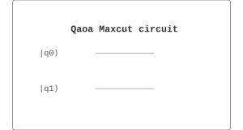

Algorithms / 算法 | 难度：高级 | 预计时间：20 分钟
QAOA MaxCut 是 QAOA 的经典应用。
MaxCut 是 NP-hard 问题
经典算法只能近似求解
经典近似算法有性能保证的上限
QAOA 可以提供比经典近似算法更好的解
对噪声有鲁棒性
理论上可以达到最优解
组合优化
图论
网络设计
from quonic.algorithms import qaoa_maxcut
# 求解 MaxCut 问题
graph = [(0,1), (1,2), (2,0)]
result = qaoa_maxcut(graph=graph, p=2)
print(f'MaxCut: {result.maxcut_value}')
print(f'Solution: {result.solution}')预期输出：
MaxCut: 2
Solution: [1, 0, 1]
Step 1: MaxCut 问题
MaxCut 问题：将图的顶点分为两组，使得连接两组的边数最大。
目标函数： \[\begin{equation} C(z) = \sum_{(i,j) \in E} w_{ij} (1 - z_i z_j) \end{equation}\]
Step 2: QAOA 电路
QAOA 电路： \[\begin{equation} |\gamma, \beta\rangle = \prod_{l=1}^{p} e^{-i\beta_l B} e^{-i\gamma_l C} |+\rangle^{\otimes n} \end{equation}\]
其中 \(B = \sum_i X_i\) 是混合算子，\(C\) 是问题算子。
Step 3: 期望值
期望值： \[\begin{equation} F_p(\gamma, \beta) = \langle\gamma, \beta|C|\gamma, \beta\rangle \end{equation}\]
Step 4: 优化
使用经典优化器最大化期望值： \[\begin{equation} \gamma^*, \beta^* = \arg\max_{\gamma, \beta} F_p(\gamma, \beta) \end{equation}\]
Step 5: 近似比
近似比： \[\begin{equation} r = \frac{F_p(\gamma^*, \beta^*)}{C_{\text{max}}} \end{equation}\]
对于 MaxCut，QAOA 的近似比约为 0.692。
QAOA MaxCut 在参数空间中寻找最优割。量子计算机负责制备态和测量，经典优化器负责更新参数。
from quonic.algorithms import qaoa_maxcut
# qaoa_maxcut(graph, p, optimizer)
# graph: 图的边列表
# p: QAOA 层数
# optimizer: 优化器
result = qaoa_maxcut(
graph=[(0,1), (1,2), (2,0)],
p=2,
optimizer='cobyla'
)
# result.maxcut_value: MaxCut 值
# result.solution: 最优解
# result.params: 优化后的参数
# result.history: 优化历史
print(f'MaxCut: {result.maxcut_value}')
print(f'Solution: {result.solution}')处理加权图的 MaxCut 问题：
from quonic.algorithms import qaoa_maxcut
import numpy as np
# 加权图：边有权重
# 例如：社交网络中用户之间的关系强度
weighted_graph = [
(0, 1, 2.0), # 用户 0 和 1 的关系强度
(1, 2, 1.5),
(2, 3, 3.0),
(3, 0, 1.0),
(0, 2, 0.5),
(1, 3, 2.5)
]
# QAOA 求解加权 MaxCut
result = qaoa_maxcut(graph=weighted_graph, p=3)
print(f'MaxCut value: {result.maxcut_value}')
print(f'Partition: {result.solution}')
# 分析最优分割
group_0 = [i for i, s in enumerate(result.solution) if s == 0]
group_1 = [i for i, s in enumerate(result.solution) if s == 1]
print(f'Group 0: {group_0}')
print(f'Group 1: {group_1}')
# 计算切割权重
cut_weight = sum(
w for (i, j, w) in weighted_graph
if result.solution[i] != result.solution[j]
)
print(f'Cut weight: {cut_weight}')分析 QAOA 的近似比随层数的变化：
from quonic.algorithms import qaoa_maxcut
import matplotlib.pyplot as plt
import numpy as np
# 测试图
graph = [(0,1), (1,2), (2,3), (3,0), (0,2), (1,3)]
# 经典最优解（暴力搜索）
n = 4
best_classical = 0
for mask in range(2**n):
cut = sum(
1 for (i, j) in graph
if ((mask >> i) & 1) != ((mask >> j) & 1)
)
best_classical = max(best_classical, cut)
print(f'Classical optimal: {best_classical}')
# QAOA 不同层数的近似比
layers = [1, 2, 3, 4, 5]
ratios = []
for p in layers:
result = qaoa_maxcut(graph=graph, p=p)
ratio = result.maxcut_value / best_classical
ratios.append(ratio)
print(f'p={p}: MaxCut={result.maxcut_value}, Ratio={ratio:.4f}')
# 绘制近似比曲线
plt.figure(figsize=(10, 6))
plt.plot(layers, ratios, 'o-')
plt.axhline(y=1.0, color='r', linestyle='--', label='Optimal')
plt.axhline(y=0.692, color='g', linestyle='--', label='p=1 limit')
plt.xlabel('Number of QAOA layers (p)')
plt.ylabel('Approximation ratio')
plt.title('QAOA Approximation Ratio vs Layers')
plt.legend()
plt.grid(True)
plt.savefig('qaoa_ratio.png')
# 分析：
# - p=1 时，近似比约为 0.692（理论极限）
# - 随着 p 增加，近似比逐渐接近 1
# - 但参数优化变得更困难使用 QAOA 解决实际组合优化问题：
from quonic.algorithms import qaoa_maxcut
import numpy as np
# 问题：任务调度优化
# 有 4 个任务，需要分配到 2 个处理器
# 目标：最小化处理器之间的通信
# 任务依赖图（边表示任务之间的通信）
task_graph = [
(0, 1, 10), # 任务 0 和 1 之间有 10 单位通信
(1, 2, 5),
(2, 3, 8),
(3, 0, 3),
(0, 2, 2),
(1, 3, 7)
]
# 将任务调度问题转化为 MaxCut 问题
# 目标：最大化切割权重（即最小化处理器间通信）
result = qaoa_maxcut(graph=task_graph, p=3)
# 分析结果
processor_0 = [i for i, s in enumerate(result.solution) if s == 0]
processor_1 = [i for i, s in enumerate(result.solution) if s == 1]
print(f'Processor 0 tasks: {processor_0}')
print(f'Processor 1 tasks: {processor_1}')
print(f'Communication saved: {result.maxcut_value}')
# 计算实际通信量
total_comm = sum(w for (i, j, w) in task_graph)
saved_comm = result.maxcut_value
print(f'Total communication: {total_comm}')
print(f'Communication ratio: {saved_comm/total_comm:.2%}')QAOA MaxCut 可以用于网络设计优化。例如，在通信网络中，将用户分配到不同的基站，最大化网络容量。在数据中心中，将虚拟机分配到不同的物理服务器，最小化通信开销。QAOA MaxCut 可以找到近似最优的分配方案。
QAOA MaxCut 可以用于社交网络社区检测。社区检测是将社交网络中的用户分成不同的社区，使得社区内部连接紧密，社区之间连接稀疏。QAOA MaxCut 可以找到近似最优的社区划分。
QAOA MaxCut 可以用于图像分割。图像分割是将图像分成不同的区域，使得区域内部相似，区域之间差异大。QAOA MaxCut 可以将图像像素分成两组，实现二值分割。
QAOA MaxCut 可以用于投资组合优化。例如，将资产分配到不同的投资组合，最大化收益同时最小化风险。QAOA MaxCut 可以找到近似最优的资产分配方案。
QAOA MaxCut 可以用于网络设计问题。
对于 MaxCut，QAOA 的近似比约为 0.692。
层数 \(p\) 越大，近似比越好。但更多的层意味着更多的参数需要优化。
QAOA 使用量子计算机制备态和测量，经典方法使用经典计算机。
QAOA
组合优化
图论
图着色
旅行商问题
量子优化
from quonic.algorithms import qaoa_maxcut
result = qaoa_maxcut(graph=[(0,1),(1,2),(2,0)], p=2)
print(f'MaxCut: {result.maxcut_value}')(https://github.com/ChrisLee0721/QuoNic/blob/main/examples/qaoa_maxcut/qaoa_maxcut.py)